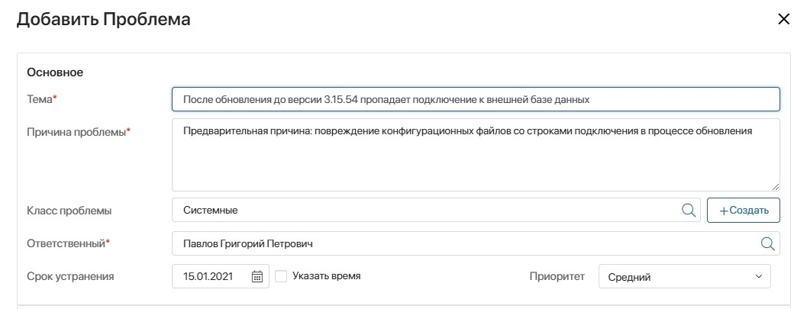

Проблема — это общая причина нескольких обращений от клиентов по какому-либо сервису. Например, несколько клиентов в обращениях указали, что после обновления приложения CRM до версии 3.77 пропала база данных клиентов или данные в ней повреждены. В таком случае проблема для услуги CRM — обновление до версии 3.77.
Как правило, супервизоры и операторы ServiceDesk выявляют проблемы и создают решения для их устранения. Эффективное управление проблемами позволяет сократить число обращений и снизить их влияние на обслуживание.
В приложении Проблемы можно регистрировать проблемы, устанавливать сроки их устранения и назначать ответственных за поиск решения.
Регистрация проблемы
Если обращения, связанные с определенными темами, уже фиксировались ранее или появляются систематически, по ним можно зарегистрировать проблему. Для этого:
- Перейдите в раздел ServiceDesk > Управление проблемами и откройте приложение Проблемы.
- В правом верхнем углу страницы нажмите кнопку Регистрация проблемы и заполните поля.
- В блоке Основное укажите базовую информацию о проблеме:

- Тема* — краткое описание проблемы;
- Причина проблемы* — предполагаемый или установленный источник возникновения проблемы;
- Класс проблемы — выберите категорию, к которой относится проблема. Значение выбирается из приложения Классы проблем. Здесь можно также добавить новый класс, нажав кнопку + Создать;
- Ответственный* — назначьте сотрудника, который будет отвечать за решение проблемы;
- Срок устранения — укажите время, за которое необходимо решить проблему;
- Приоритет — степень важности решения проблемы.
- В блоке Связанные элементы укажите аспекты оказания услуги, которые могут быть связаны с проблемой:
- Связанные известные ошибки — укажите ошибки, которые встречались ранее и относятся к проблеме. Список всех доступных ошибок хранится в приложении Известные ошибки. Здесь можно также добавить новую известную ошибку, нажав кнопку + Создать;
- Связанные RFC — выберите из списка запросы на изменения конфигурации оборудования или ПО, после которых возникла проблема. Список всех доступных запросов хранится в приложении RFC. Здесь можно также добавить новый связанный запрос, нажав кнопку + Создать;
- Связанные CMDB — укажите активы, при работе с которыми проявляется проблема. Список всех доступных активов хранится в приложении CMDB. Здесь можно также добавить актив, нажав кнопку + Создать;
- Связанные обращения — выберите обращения пользователей, причиной которых является регистрируемая проблема. Значение выбирается из приложения Обращения.
Действия с проблемой
При работе с проблемой можно взять её на рассмотрение, изменить данные по ней и зафиксировать результаты работы.
Взять в работу
Чтобы начать работу с проблемой, откройте её карточку, нажмите кнопку Взять на рассмотрение и подтвердите действие. При этом можно добавить комментарий.
Отредактировать данные по проблеме
Информацию, указанную при регистрации проблемы, можно изменить. Для этого на карточке проблемы нажмите кнопку Изменить данные. В открывшемся окне внесите изменения. Например, можно изменить ответственного сотрудника.
Завершить работу с проблемой
Если сотрудник, который работает с проблемой, нашёл её решение, нужно открыть карточку, нажать кнопку Решена и подтвердить действие. При этом можно добавить комментарий. После этого для проблемы будет установлен финальный статус Решена.
Если найти решение проблемы не удалось, нажмите кнопку Невозможно решить. После этого для проблемы будет установлен статус Невозможно решить.
Статусы проблемы
В ходе работы с проблемами у них меняются статусы. Это происходит автоматически на определённых этапах.
По умолчанию для проблемы доступны следующие статусы:
- Новая — создана новая проблема. Устанавливается сразу после создания;
- На рассмотрении — сотрудник взял проблему в работу. Устанавливается после того, как он открыл карточку проблемы и нажал кнопку Взять на рассмотрение;
- Решена — найдено решение проблемы. Устанавливается после того, как исполнитель открыл карточку проблемы и нажал кнопку Решена;
- Невозможно решить — решение проблемы отсутствует. Устанавливается после того, как исполнитель открыл карточку проблемы и нажал кнопку Невозможно решить.
Статусы можно настроить самостоятельно. Подробнее об этом читайте в статье «Поле "Статус"».
Карточка проблемы
В карточке можно просмотреть основные данные о проблеме, указанные при ее регистрации, и историю работы с ней.
В блоке Задачи по предотвращению можно назначать отдельные задачи сотрудникам для устранения проблемы. Для этого нажмите кнопку + Задача. Введите название задачи, выберите исполнителя и укажите срок выполнения. Также можно открыть полную форму задачи, нажав на три точки справа от поля Срок. Нажмите Сохранить. Задача и срок её выполнения отобразятся в карточке проблемы.
Известные ошибки и классы проблем
Данные для создания и работы с проблемами хранятся в приложениях Известные ошибки и Классы проблем.
В приложении Известные ошибки можно фиксировать ошибки, которые встречались ранее. Для этого нажмите кнопку + Известные ошибки, заполните поля и нажмите Сохранить.
- Название* — краткое описание известной ошибки;
- Регламент решения — файл с информацией об устранения проблемы;
- Процедура обхода — действия, которые приводят к нужному вам результату, и при этом ошибка не возникает;
- Временное решение — используется, пока не найдено постоянное решение проблемы. Список доступных решений хранится в приложении Решения. Здесь можно также добавить новое решение, нажав кнопку + Создать.
В приложении Классы проблем вы можете задать группы, на которые можно разделить проблемы. Например, аппаратные сбои, ошибки в программном обеспечении, инциденты в сфере информационной безопасности и т. д. Чтобы добавить группу, нажмите кнопку + Класс проблем, введите название и нажмите Сохранить.